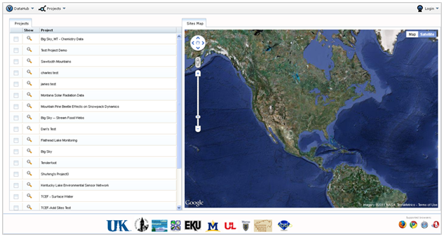

This section will show you the various ways to search for data in VOEIS. To get a sense of the data stored in individual projects, first navigate to the Project_Browse page (shown below), which lists all of the projects stored within VOEIS. The list can be sorted alphabetically by clicking the header box at the top labeled “Project”. Click the magnifying glass icon located to the left of the project name you are interested in.

You will be directed to the Project_Show page for the project you selected. See Exploring Individual Projects for instructions on exploring project site metadata. You will only be able to query data from projects within which you are a member with the appropriate permission settings. Once you have identified the project and data that you are interested in, you are ready to query and export! The next two sections will walk you through the various ways this can be accomplished.
Created with the Personal Edition of HelpNDoc: Easily create Help documents